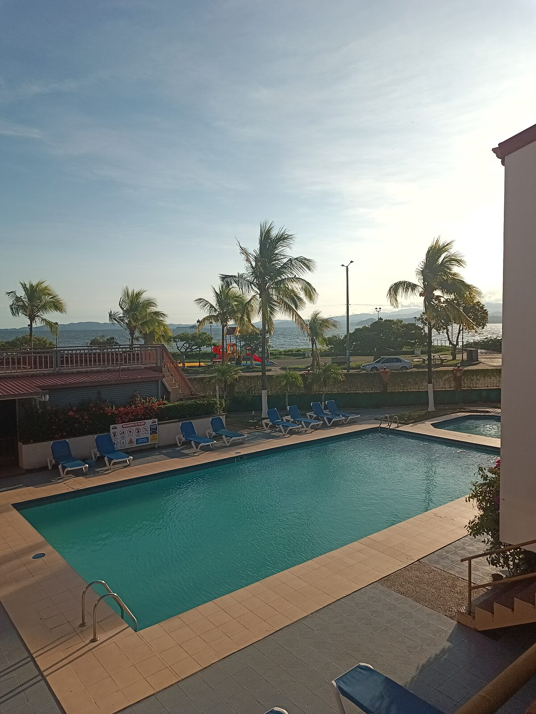
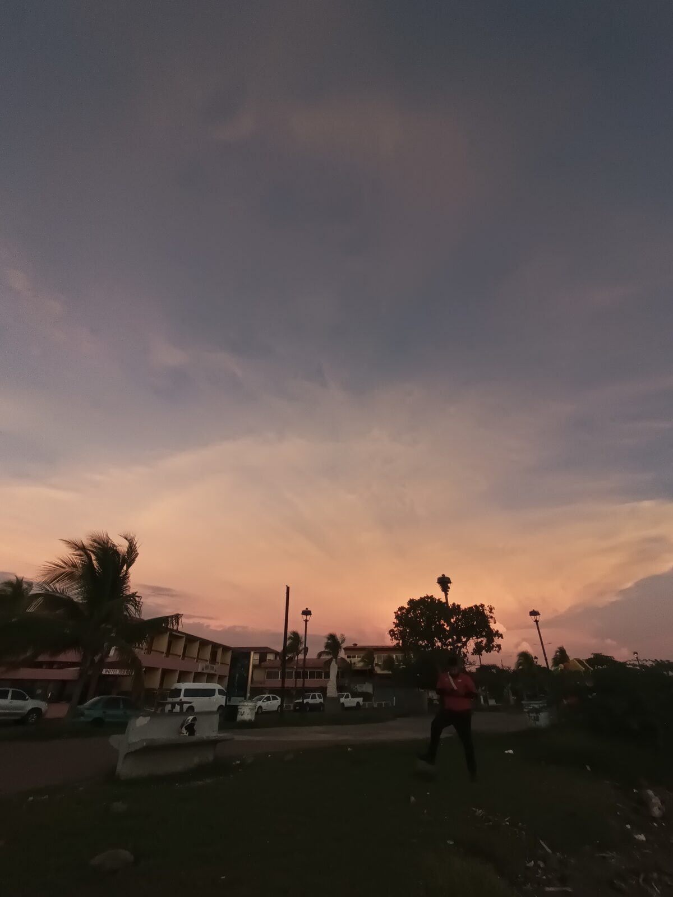
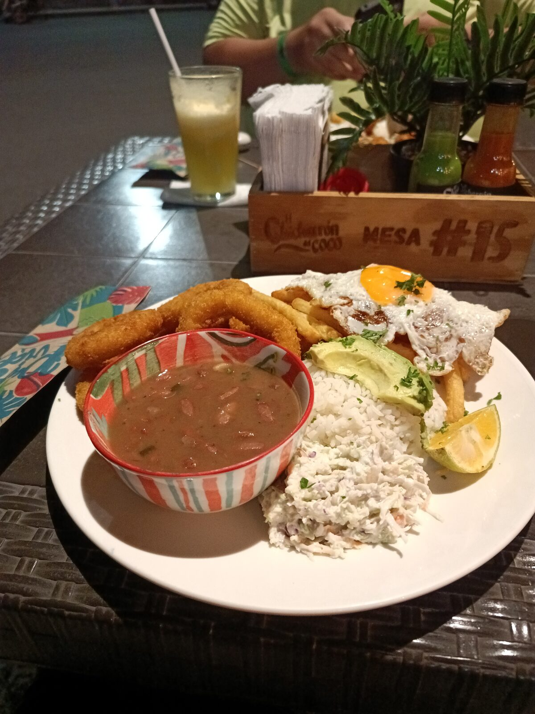

Sunsets and good food
Today I actually got up early (early for me, you know how it is HAHAHA), because we were going to the Parque Marino del Pacífico, which besides being a beautiful aquarium is a wildlife rehabilitation center. I'd seen their Instagram and it looked amazing!
We got there and... CLOSED. They don't open on Mondays HAHAHAHA.


So we went to have lunch and work. I'm putting together the challenge for BioReto, a hackathon here in Costa Rica: a simulated bacteria incubator where each team has to grow its own colony. If you're curious, it's all at bioreto.hazloahora.org. And yeah, there went my afternoon.


🐱🐱🐱🐱 Lunch: 4 out of 5 Adas. Really tasty, but really pricey.
When I finally looked up from the laptop, Puntarenas was giving us this:




After those sunsets we met for dinner with my friend Aaron, a Systems Engineering professor at the UCR. We went back to El Chicharrón del Coco, because yesterday's tacos earned a rematch.

What's happening to education in the age of AI?
We ended up talking about how he's living through the shift to AI, and he told me, quite worried:
“Man, I don't assign homework anymore, because they do all of it with AI.”
He's fine with them using it; they'll use it at work anyway. What worries him is that they don't understand why the stuff underneath matters. He told us he's received projects where everything works, but when he asks the kids “okay, what does this do?” or “let's see, write me a filter for that query,” they can't do it. And in the end, that's disappointing.
That's why he now steers his classes toward hands-on work: understanding how things are made, how they come out and why. And one of his students, totally calm, asked him: “And why would I want to learn?” HAHAHAHA.
All of that brought back my professor friends' complaints and the crisis I had at the start of this year, 2026. When I started using AI it blew my mind, and I thought: why keep giving classes, workshops and talks if everything is one prompt away and it'll explain it better, with all the patience in the world? Anyone can do it.
But it turns out there's something called “facilución,” a concept from people with high abilities: we believe everything is easy. Which is NOT TRUEEE, but we believe it HAHAHA. So I started testing everything and asking lots of colleagues, and it turns out everyone teaches and gets involved in teaching in their own way. I even heard of people who do it to feel loved and others who do it to feel important, pure ego, which is also valid.
That crisis taught me that what really matters in teaching and learning is feelings. Claude and ChatGPT can have all the information in the world, but without emotions underneath, there's no learning. What matters is human interaction: having people involved inspires, and that can shape someone's future. That's how I got out of the crisis.
So here's my question for you: which teacher taught you something no prompt could ever have taught you?
👆 Tap or click any point on the map to read that day's chapter.